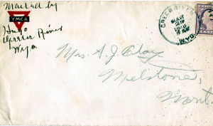
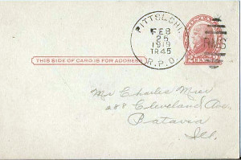
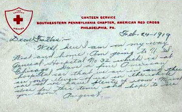
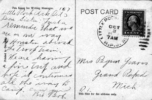
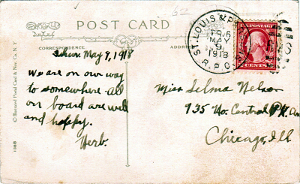
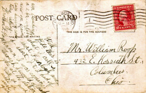

'En Route' Postal History
United States, First World War, 1917-19
by Bob Swanson
About This Presentation
- Large numbers of military men were transported by rail throughout the United States during the First World War (1917-1919)
- They often mailed cards and letters while onboard the trains
- Some items are canceled by Railway Post Office (RPO) markings
- The content of these postal items can be of great interest
- These are only a small subset of such covers and cards
Troop Train "Ground Rules"
- The men were not allowed off the train (a rare exception: time for exercise drill)
- Generally, they were not informed of their destination
- Sometimes letters were handed to Red Cross women at train stations for mailing (some even provided a stamp for the soldier's mailed item)
- Otherwise, letters would have to be placed in the RPO slot on the train, or handed to a helpful civilian
Cover and Letter Posted in Wyoming

Cover from Soldier, posted in Green River, Wyoming, written on train
(Click on image to see larger version.)
,'Cover from Soldier, posted in Green River, Wyoming, written on train');){kind=link}
- Mailed in Green River, Wyoming
- Letter indicates "written on train"
- (Appears to be mailed by civilian "Hugo" after letter handed to them by the soldier "Edward")
Postcard from Wounded Soldier in a Hospital Car

Postcard from Wounded Returning Soldier in a special hospital car
(Click on image to see larger version.)
,'Postcard from Wounded Returning Soldier in a special hospital car');){kind=link}
- Government Postal Card (GPC) mailed by wounded returning soldier, 1919
- He writes that he is going to General Hospital #32, in a special hospital car
- Canceled by RPO handstamp on train (Pittsburg & Chicago RPO)
Postcard from Wounded Soldier in a Hospital Car

Back of GPC from Wounded Returning Soldier in a special hospital car
(Click on image to see larger version.)
,'Back of GPC from Wounded Returning Soldier in a special hospital car');){kind=link}
The image shows his written message.
Little Rock, Arkansas "En Route"

Little Rock, Arkansas, Transit Clerk Handstamp
(Click on image to see larger version.)
,'Little Rock, Arkansas, Transit Clerk Handstamp');){kind=link}
- Soldier writes "going to Houston" (October 1917)
- Canceled by "Transit Clerk" handstamp for Little Rock (Tr. Clerk office was usually located in a train station)
"En Route" With RPO Handstamp

En Route Card with RPO Handstamp
(Click on image to see larger version.)
,'En Route Card with RPO Handstamp');){kind=link}
- Written message: "we are on our way to somewhere"
- Canceled by St. Louis & Parsons RPO handstamp (applied on board train in RPO car)
Sailor "En Route" From Great Lakes

En Route Card with RPO Handstamp
(Click on image to see larger version.)
,'En Route Card with RPO Handstamp');){kind=link}
- Sailor writes: "am standing a 2 hr watch now on train"
- Uncommon to find 'en route' items from navy personnel
- Canceled by International machine from main Columbus, Ohio, post office
Acknowledgements
Examples from the collection of Bob Swanson
Mini-Presentation updated 8 February 2018
This online slide presentation created with reveal.js .
Instructions for Presentation:
- Computer: Use your arrow keys to move from one slide to another. See: a How-To webpage with more options. (You can also click on the small arrow images in lower right corner.)
- Phone/Tablet: Swipe left/right on your screen to move from one slide to another.
- Select Image for Table of Contents (in upper left corner) to view Table of Contents.
Table of Contents
Title Page
About This Presentation
Troop Train "Ground Rules"
Cover and Letter Posted in Wyoming
Postcard from Wounded Soldier in a Hospital Car
Little Rock, Arkansas
"En Route" With RPO Handstamp
Sailor "En Route" From Great Lakes
Acknowledgements
Instructions for Reading Presentation
Main Presentations Page